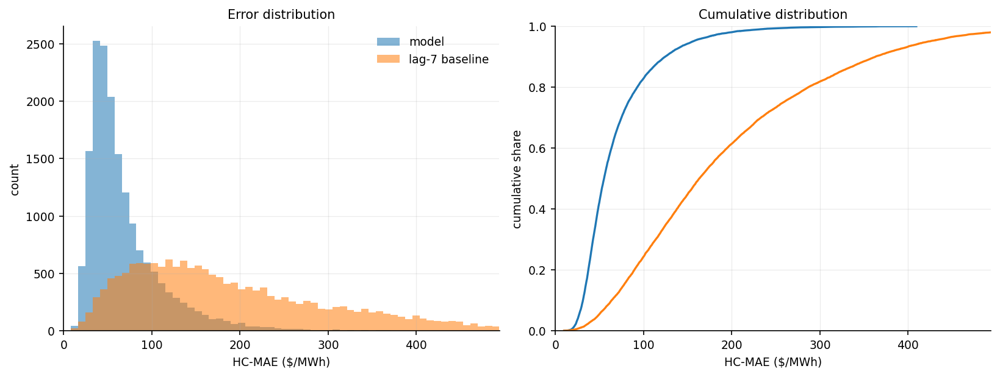
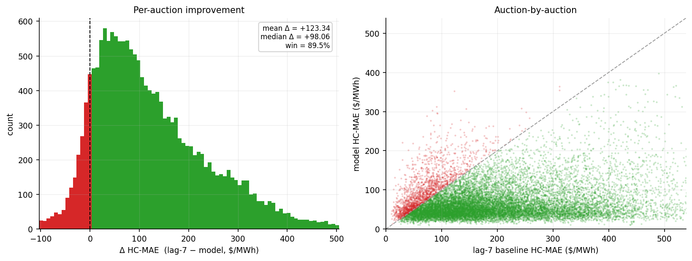
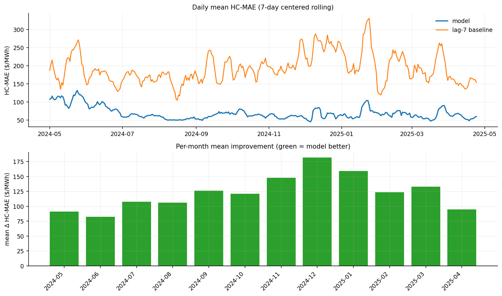
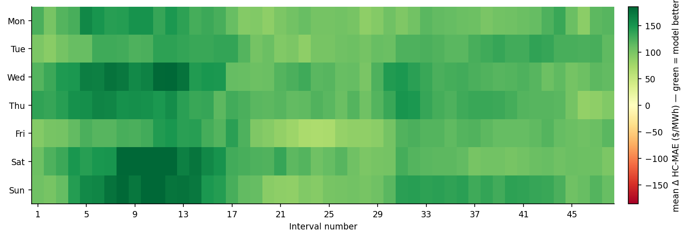
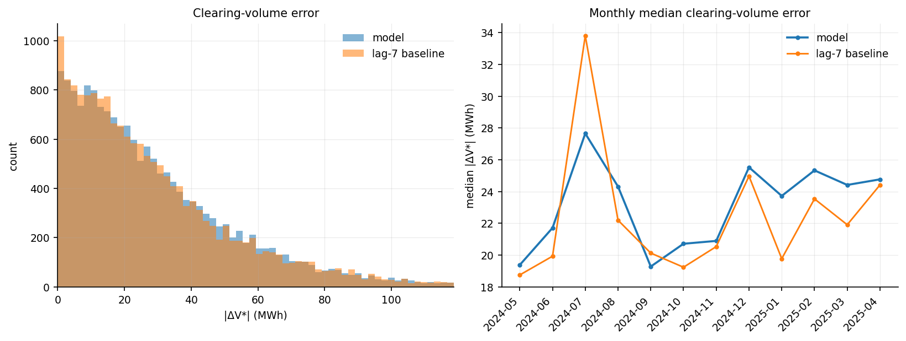
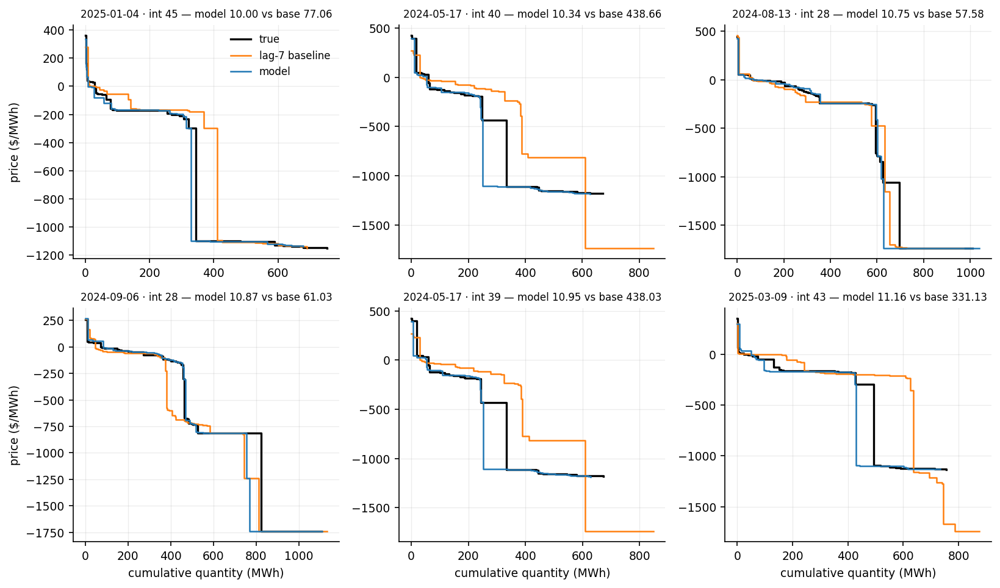
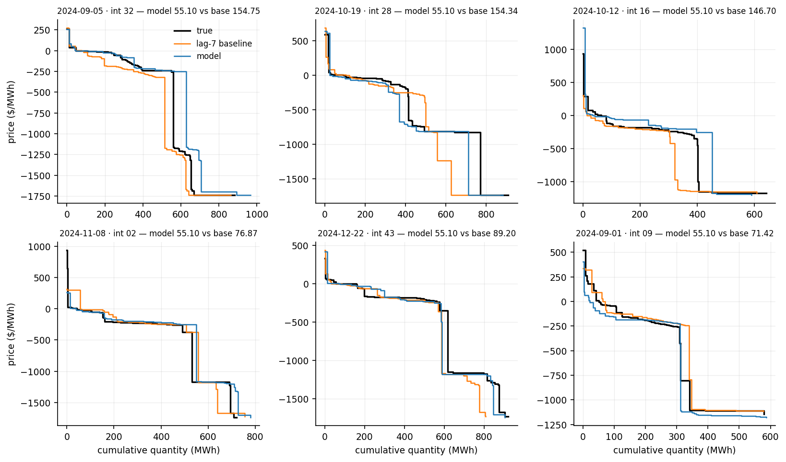
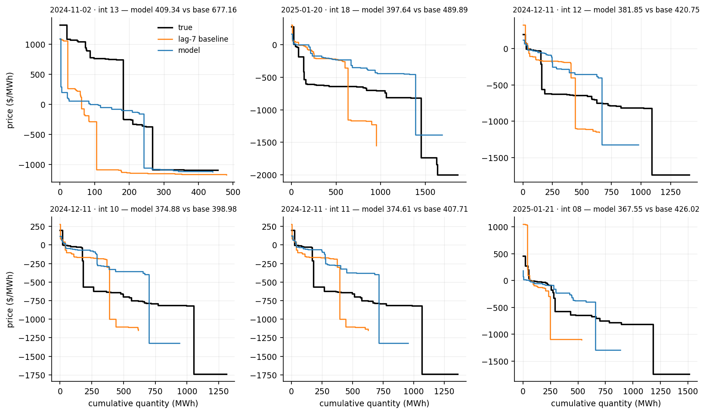

The model works on the v-grid embedding: the prices of a curve read at 64 volumes evenly spaced from 0 to a fixed volume cap. The cap is a high percentile of the total volume of the training auctions, 99 for demand and residual and 99.9 for supply, so the same position always means the same volume in every auction.
This row reads the true curve, so it is not a forecast. Out of the rolling candidate set (the real past curves of the same interval and the same weekday, dated on or before the first day of the test month minus 7 days), it returns the curve whose v-grid embedding is closest to the true curve's v-grid embedding in Euclidean distance. For a test month it may also return a curve from an earlier test month. It shows how close a single real curve from that candidate set can get to the truth.
7-day-ahead · test 2024-05-01 → 2025-04-24 · 17,232 auctions · reference: lag-7 baseline
| This model | lag-7 baseline | |
|---|---|---|
| Mean HC-MAE ($/MWh) | 68.56 | 191.90 |
| Median HC-MAE ($/MWh) | 55.10 | 163.16 |
| Win % vs lag-7 | 89.5% | - |
| Mean |ΔV*| (MWh) | 29.47 | 29.23 |
| Median |ΔV*| (MWh) | 22.89 | 22.15 |
| Mean |ΔP*| ($/MWh) | 26.07 | 25.05 |
| Median |ΔP*| ($/MWh) | 3.37 | 3.09 |




The predicted residual curve is crossed with the $0 line, and the error is how far this moves the clearing point (V*, P*).
| This model | lag-7 baseline | |
|---|---|---|
| Mean |ΔV*| (MWh) | 29.47 | 29.23 |
| Median |ΔV*| (MWh) | 22.89 | 22.15 |
| Win % on |ΔV*| | 48.8% | - |
| Mean |ΔP*| ($/MWh) | 26.07 | 25.05 |
| Median |ΔP*| ($/MWh) | 3.37 | 3.09 |
A few price-floor auctions make the mean of |ΔP*| large, so the median is the summary.



